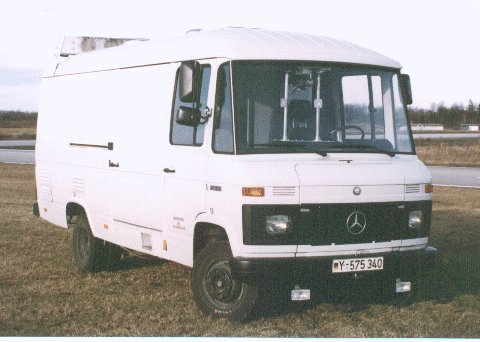

Past
Since the beginning of the automobile, there has always been a dream of the self-driving car. With origins as early as the 1920’s, the concept of the self-driving cars has seen a transformation through many forms.
The earliest forms of the self-driving car did not look like what we would associate with autonomous vehicles of today. The earliest ideas included using a magnetic embedded road to guide a car through the magnetic attraction. Other ideas included using radio controls as a means to “drive” a car without the interaction of passengers.
Early world’s fairs that took place throughout the US in the 1930’s – 40’s became full of pipeline dreams of the self-driving car. While the self-driving car of today replicates a human driver through real time decision making, the self-driving car of the past was closer to a personal public transit system following premade routes. As a result, it was not until much later that we saw a true “autonomous” vehicle.
It was not until the 1980’s when the idea of a self-driving car built on top of computer vision truly came to life. One of the earliest projects was developed my Mercedes Benz in which a robotic van guided by computer vision was brought to life. This was one of the earliest examples of a shift towards the implementation of digital systems and machine learning within autonomous vehicles. For the first time, the use of cameras would be implemented to give the car a vision to drive in real time.
By the late 90s to early 2000s, the rapid growth of the computer as well as increased funding for self-driving vehicle projects allowed self-driving cars to truly begin to develop. A majority of this funding originated from government initiatives. One notable government sponsored endeavor was the DARPA Grand Challenge with a 1 million dollar prize for navigating an autonomous desert course. Through the efforts of prestigious institutions such as Stanford and Carnegie Mellon, the DARPA grand challenge was completed marking a fundamental breakthrough in self-driving vehicles.
As we slowly make our way to the present of autonomous vehicles, it’s important to understand the evolution of the autonomous vehicle through it’s multiple concepts and forms. Through history the autonomous vehicle has slowly come to life through different forms and visions. From the sci-fi realities as depicted in media, the autonomous vehicle has always existed in one form or another.